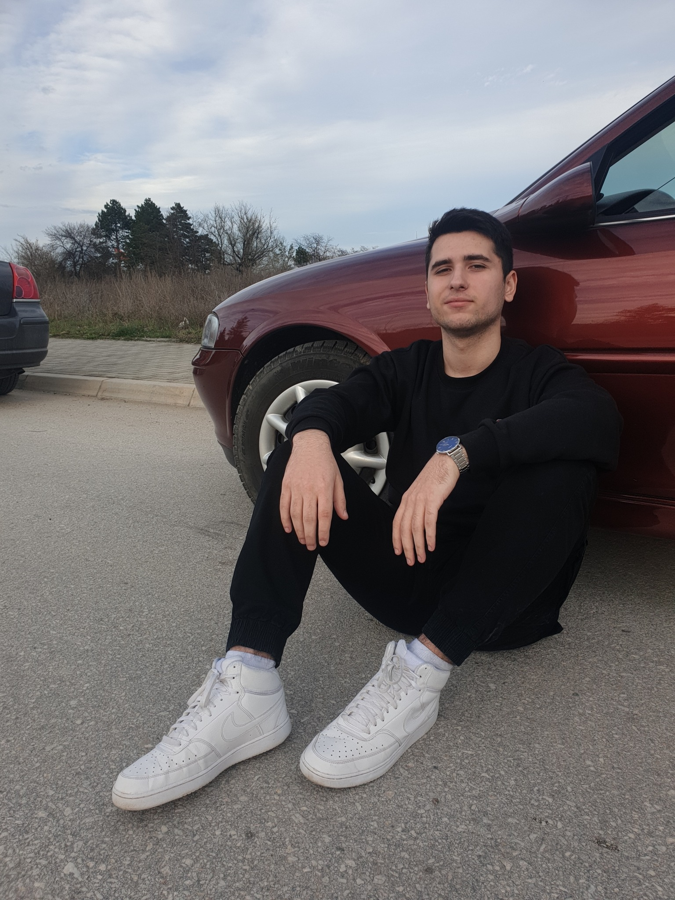

Welcome to my personal website! I'm Hristijan Avtarovski, a passionate and ambitious 19-year-old student from Bitola, currently pursuing a degree in Computer Science Engineering. I have a deep fascination for technology and its potential to transform the world.

I am currently enrolled at "Ss. Cyril and Methodius" University - Skopje FACULTY OF COMPUTER SCIENCE AND ENGINEERING, pursuing a Bachelor's degree in Computer Science Engineering. I'm consistently striving to expand my knowledge and stay updated with the latest advancements in the field.
Beyond my studies and professional pursuits, I have a range of diverse interests that shape who I am. Here are a few of my passions:
Travel
I have an adventurous spirit and a love for exploring new places. I enjoy immersing myself in different cultures, discovering hidden gems, and broadening my horizons through travel experiences.
Football and Sports
I'm a passionate sports enthusiast, and football holds a special place in my heart. I love watching matches, analyzing strategies, and being part of the excitement that sports bring. I also enjoy playing football with friends and staying active through other sports activities.
Meeting new people
I find great joy in connecting with people from various backgrounds and cultures. Engaging in meaningful conversations, learning from different perspectives, and building new friendships is something I truly cherish. If you'd like to connect or collaborate, don't hesitate to reach out!
Gaming
In my downtime, you can often find me immersed in the world of gaming. I enjoy playing computer games that offer both entertainment and opportunities for strategic thinking. Gaming allows me to unwind, explore virtual worlds, and sometimes even connect with friends online for multiplayer adventures.
Music
Music is a constant companion in my life, with hip-hop and rap being my preferred genres. I find inspiration and motivation in the lyrics and beats, and it's a source of creativity for me.